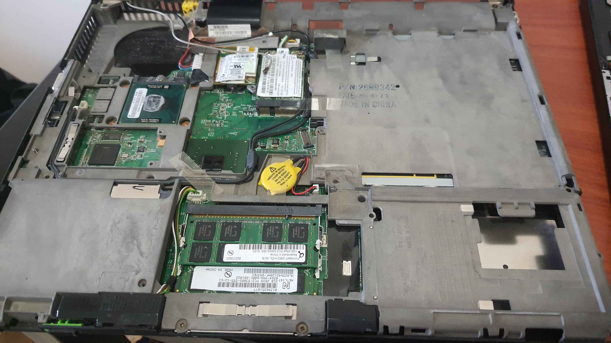
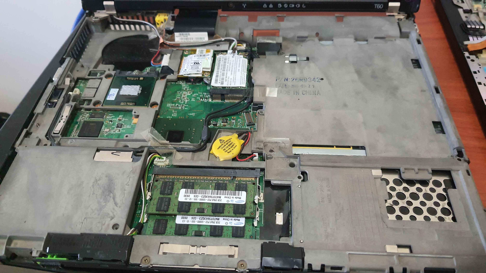

Usan Siriwardana's Projects
Out of the Box
Compared to working on modern laptops, this thing is a dream to work on. Detailed first-party instructions, easilly accessible screws, they even have labels for the screws moulded into the bottom plate! Working on the T60 makes me really miss this era of computers, where they were meant to be fixable and upgradeable.
With the Palm Rest, Keyboard, Keyboard Bezel, and Cooling System removed, every part I needed to replace at this time was easily accessible. I replaced the CPU (Yes! This laptop has an upgradeable CPU! Why can't we have nice things anymore?), RAM, and installed a new SSD in just a few minutes.
About that RAM upgrade. This machine was from a time when the memory controller was still on chipset, rather than current machines which normally place it on the CPU die. And while it does support 64-bit CPUs (Like the T7600 I used), the chipset is still 32-bit, and since it doesn't support PAE, the system is limited to 4GB of RAM.
To add insult to injury, the system also uses memory mapped IO to reach the serial or paralell ports when placed on a dock, further limiting the amount of RAM accessible by the operating system to only 3GB, which is exactly what the machine had before I began working on it.
But that's not to say that my upgrade here is completely useless. By using 2 sticks of 2GB, the chipset could map the 3GB to each stick evenly, allowing all 3GB to run in dual-channel, helping to improve the RAM access speed. Whether or not the chipset or BIOS actually works like this, is a question I have yet to find a proper answer to.
And Test, Test, and Test Some More
I tested Timed linux Kernel Compilation, to get something I could use to compare the system pre-upgrade and post-upgrade.
Pre-upgrade, the laptop has an Intel Core 2 Duo T2400 CPU, and 3 GB of RAM (1+2 configuration).
These tests were done running a live boot of Linux Mint LMDE 6, 32 bit. Tests were done using Linux 6.18.6, using make -j2, and the config from make tinyconfig. The source files were stored on the same USB drive for all tests. Each test was done 4 times, ignoring the first run.
Yes that USB drive was probably a significant bottleneck. Why didn't I use the SSD? Why Indeed.
| Configuration | Run 1(s) | Run 2(s) | Run 3(s) | Average(s) |
|---|---|---|---|---|
| T2400, 1+2GB | 337.688 | 337.325 | 335.783 | 336.932 |
| T7600, 2+2GB | 246.731 | 242.696 | 241.350 | 243.592 |
So the new system is about 1.38x faster than before. Is this because of the CPU, the RAM, or even the fresh thermal paste? I have no idea, and I don't care either. The system is noticably faster now, so that's good enough for me.